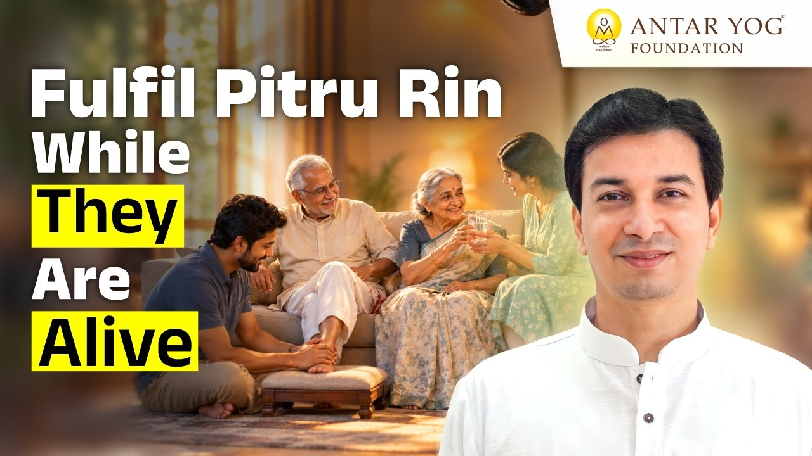
श्राद्ध से पहले सेवाService Before Shraddha
“ऐसी उपेक्षित अवस्था में कोई जाना नहीं चाहिए, तब वो पितर बनते हैं।”“No one should depart in such a neglected state; that is when they become Pitars.”
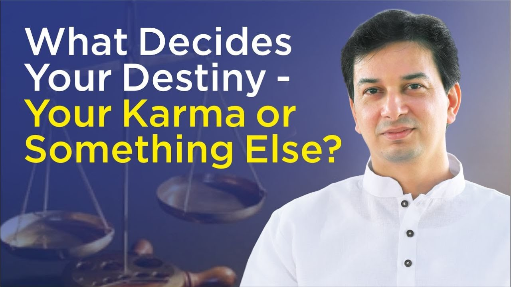
आपका भाग्य कौन लिखता है? कर्म नहीं, संस्कारWho Writes Your Destiny? Not Karma, but Samskara
“पहले किए हुए शुभ-अशुभ कर्मों के संस्कारों का नाम दैव है।”“These five causes for the accomplishment of all actions are declared in the Sankhya doctrine, which shows the way to end all actions; learn them well from Me.”
अरबपति बनने का भूला हुआ रहस्यThe Forgotten Secret of Becoming a Billionaire
“गरीब ब्राह्मण नहीं होता। यदि वह वेद को ठीक से जानता है, तो उसे लक्ष्मी का वरदान ही है कि वह धनवान होना चाहिए।”“A Brahmin is not poor. If he truly knows the Veda, he has the very boon of Lakshmi that he must be wealthy.”
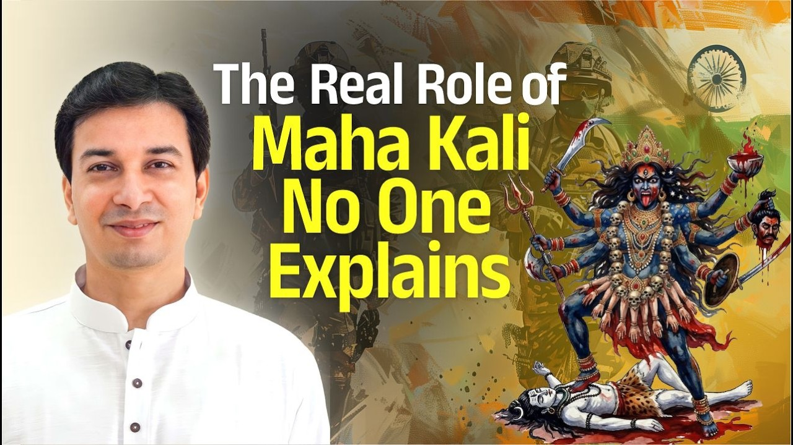
हर शुभ आरंभ की रक्षक शक्तिThe Guardian Power of Every Auspicious Beginning
“कुछ भी आरंभ करना हो, तो किससे शुरू करना होता है? महाकाली से।”“Whenever you start anything, what do you start with? With Maha Kali.”
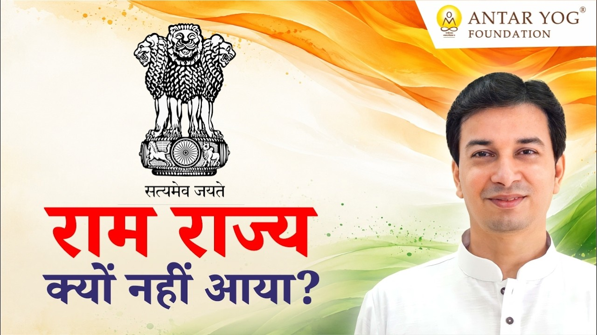
राम राज्य संघीय था या एकात्मकWas Ram Rajya Federal or Unitary
“हम सपना तो देख रहे हैं राम राज्य होने का, और यह फेडरल गवर्नमेंट से कभी हो ही नहीं सकता।”“We dream of Ram Rajya, and it can never come from a federal government.”
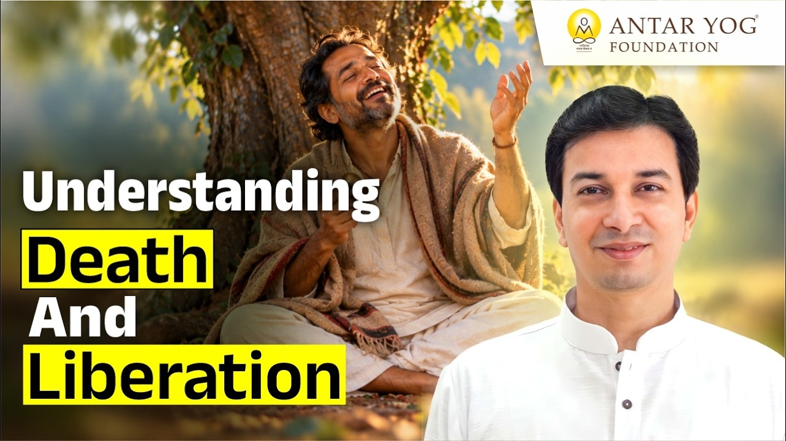
पितृ पक्ष का सच्चा अर्थThe True Meaning of Pitru Paksha
“जीवन मुक्त व्यक्ति ही दूसरे को मुक्ति दे सकता है, और मुक्ति जीते जी दी जाती है।”“Only a person liberated while living can give liberation to another, and liberation is given while living.”
कर्म की लाठी कब छोड़नी हैWhen to Let Go of the Staff of Karma
“Feel that state first, फिर समझेगा कि मैं पूरा जीवन भर कर्म कर सकूँगा?”“Your right is to action alone, never to its fruits.”
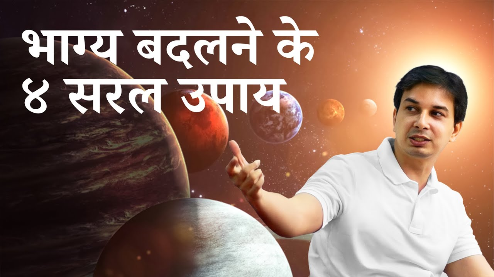
भाग्य बदलना है तो ये चार चीज़ें चाहिएTo Change Your Destiny, You Need These Four Things
“भाग्य अगर बदलना है, तो चार चीज़ों की ज़रूरत होती है।”“If destiny is to be changed, four things are needed.”
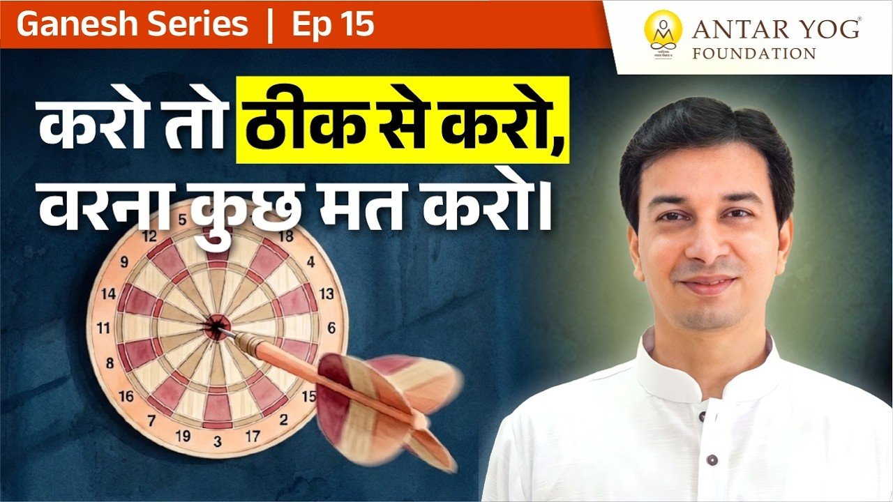
संत-वाणी और परमात्मा-वाणी का भेदThe Word of a Saint and the Word of the Lord
“संत-वाणी समय और स्थान के अनुसार बदल सकती है, लेकिन उसके पीछे का गहन तत्व जो बताना है, वह यूनिवर्सल होगा।”“The word of a saint can change according to time and place, but the deep essence it is meant to convey will be universal.”
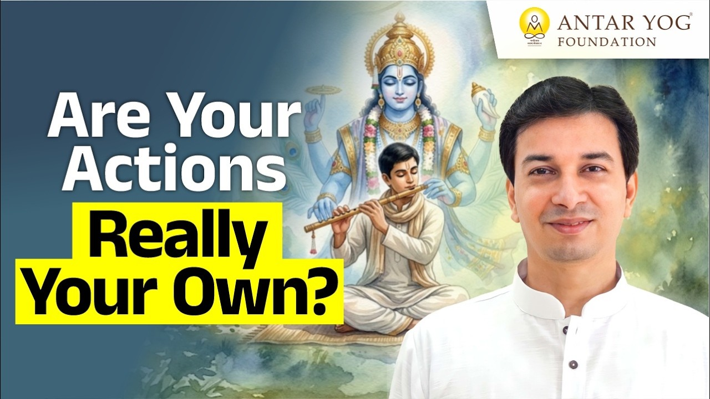
कर्ता कौन है जब सब प्रकृति कर रही हैWho Is the Doer When Prakriti Does Everything
“मैं ही करता हूं, ऐसी अगर समझ होगी, तो वो अहंकार युक्त वाक्य होगा।”“I alone do it: if such is the understanding, it is a sentence full of ego.”
अस्थिर संसार में स्थिर की खोजSeeking the Stable in an Unstable World
“Either you have to leave the world, or the world will leave you.”“Either you have to leave the world, or the world will leave you.”
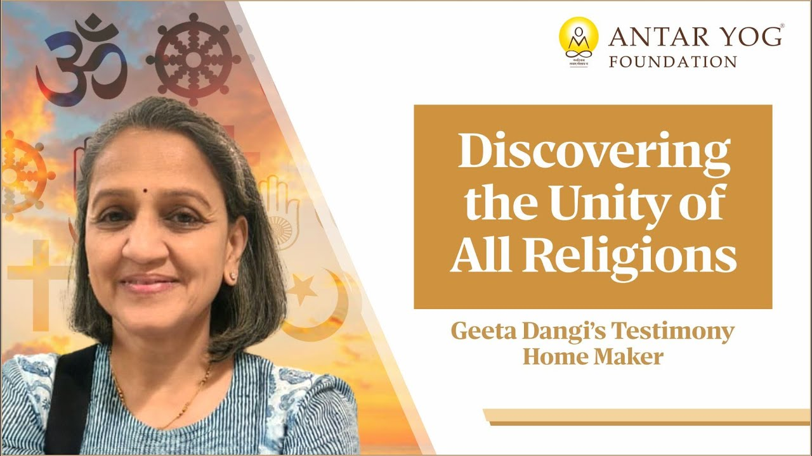
सब धर्मों का मूल स्रोत एक हैThe Source of All Religions Is One
“धर्म एक्चुअली मानव जाति के कल्याण के लिए होना चाहिए, मगर वो उल्टा मानव जाति के संहार के लिए, अधोगति के लिए कारण हो गया।”“Non-violence is the highest dharma.”
ब्रह्मचर्य का सच जो कोई नहीं बताताThe Truth About Brahmacharya No One Tells You
“उसमें कुछ भी योग्य अयोग्य नहीं है।”“There is nothing worthy or unworthy in this.”
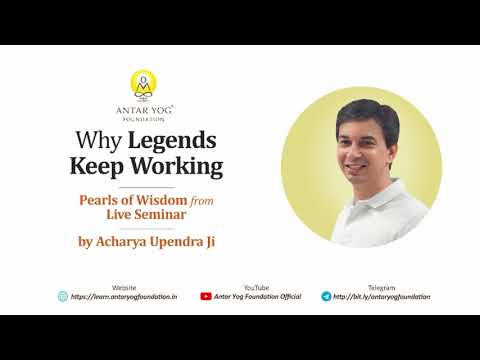
जिसे कुछ नहीं चाहिए, वह भी कर्म क्यों करता हैWhy Does One Who Needs Nothing Still Act
“मुझे एक आदर्श दिखाना होता है। यह दिखावे के लिए नहीं है; यही मेरे जीवन का ढंग है।”“Whatever a great person does, others also do. Whatever standard he sets, the whole world follows.”
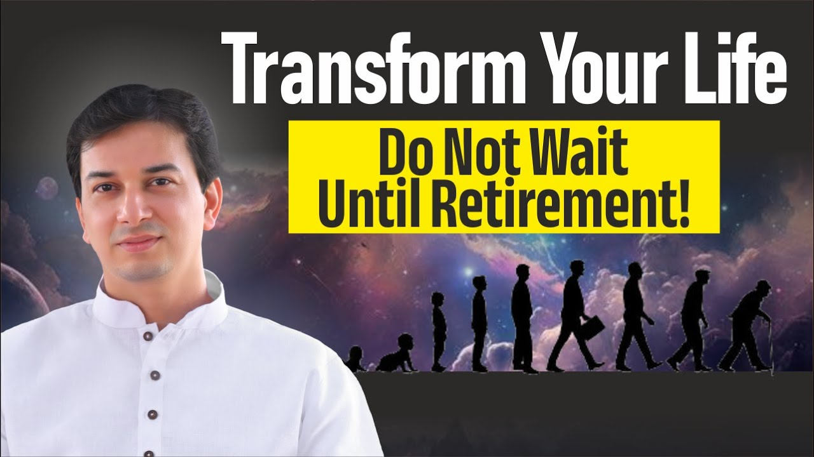
अध्यात्म के लिए सेवानिवृत्ति का इंतज़ार क्योंWhy Wait for Retirement to Turn to Spirituality
“जिसने अभी तक किया ही नहीं, उसमें अचानक साठ के बाद अध्यात्म नहीं आता।”“The child is attached to play, the youth to the young woman, the old man to worries; but no one is attached to the Supreme Brahman.”
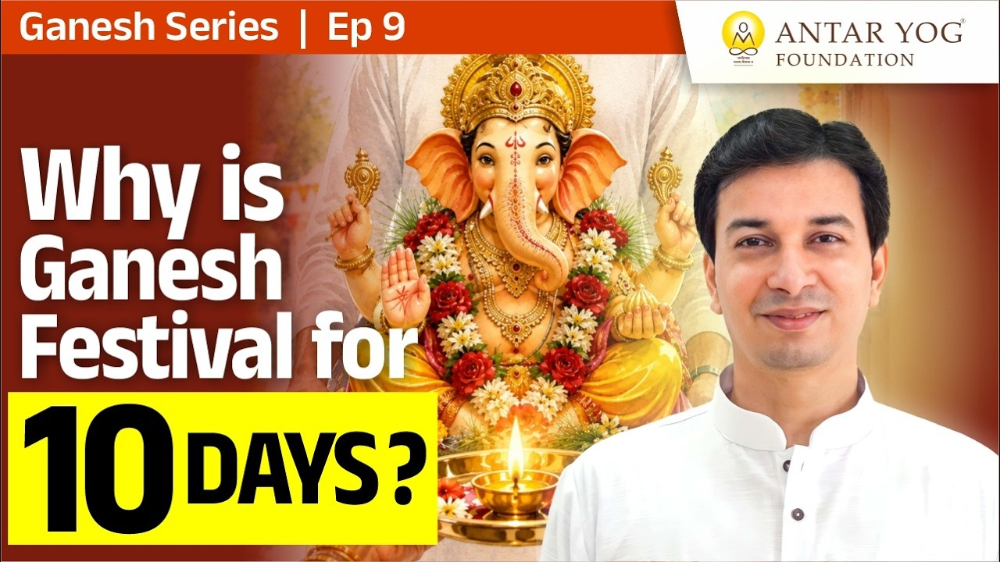
तुरीय अवस्था और विवेक का जन्मThe Turiya State and the Birth of Discernment
“तू सपने वाला भी सच नहीं है, और जागृत वाला भी सच नहीं है। तू दोनों का दृष्टा है, तू वह आत्म तत्व है।”“You are not the one in the dream, and you are not the one who is awake. You are the seer of both; you are that Self.”
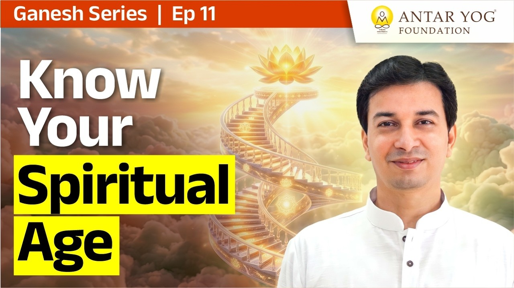
आपकी असली उम्र कितनी है? शरीर की नहीं, आत्मा कीWhat Is Your Real Age? Not of the Body, but of the Soul
“कहीं तुम्हारा ईगो तो मैं हर्ट नहीं कर रहा हूं ना? जागृत कर रहा हूं तुम्हें, जागृत।”“Am I hurting your ego? I am waking you up, awakening you.”
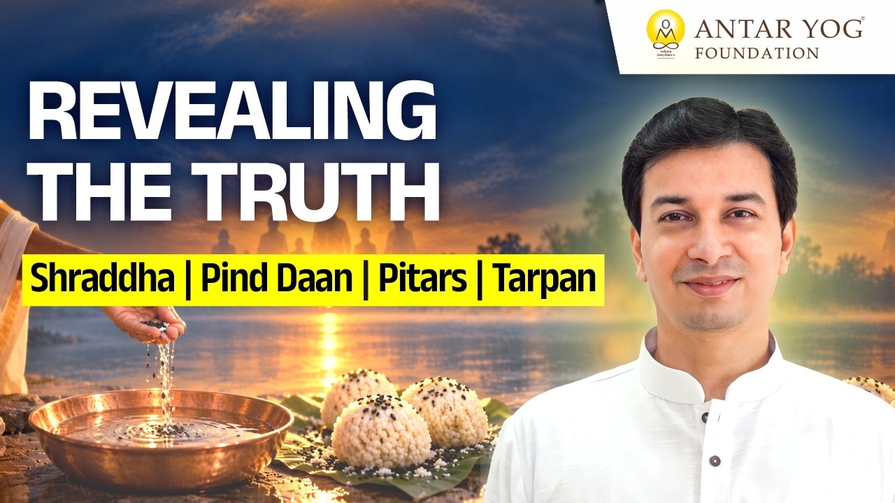
पितरों का सचThe Truth About the Pitars
“हम सब यहाँ सुखी हैं। आप लोग अपने अगले लोक में या अगले जन्म में मुक्त हो जाना। यहाँ अटकना मत।”“We are all happy here. Become free in your next world or your next birth. Do not get stuck here.”
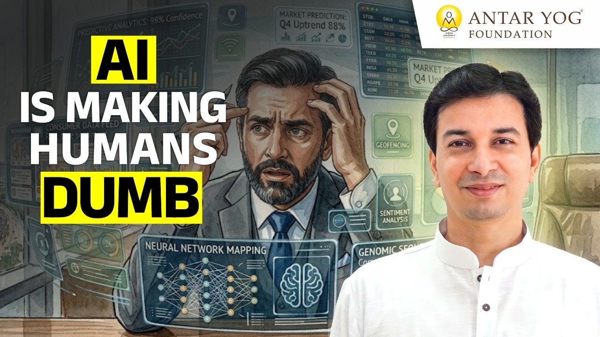
फ़ोन स्मार्ट हो रहा है, क्या हम भी?The Phone Is Getting Smarter, Are We?
“फ़ोन स्मार्ट होता जा रहा है और हम dumb होते जा रहे हैं।”“The phone is becoming smart and we are becoming dumb.”
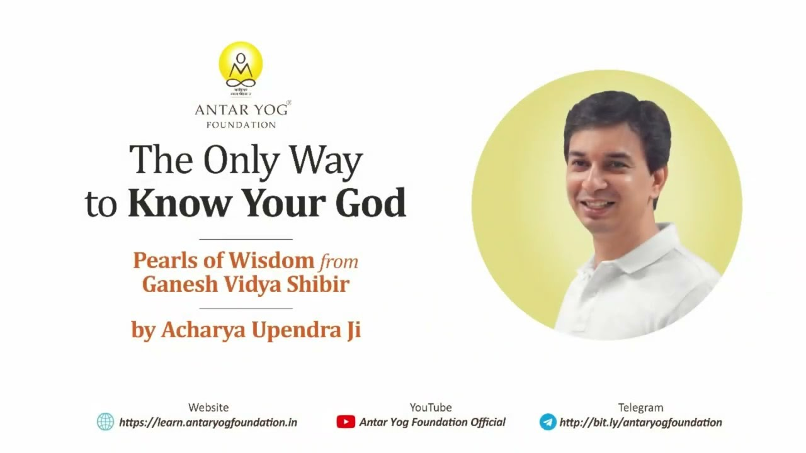
चित्र से प्रेम या ईश्वर से मिलनLoving a Photograph or Meeting God
“That is your foolishness. मानो अथवा न मानो, you should know your God.”“That is your foolishness. Believe it or not, you should know your God.”
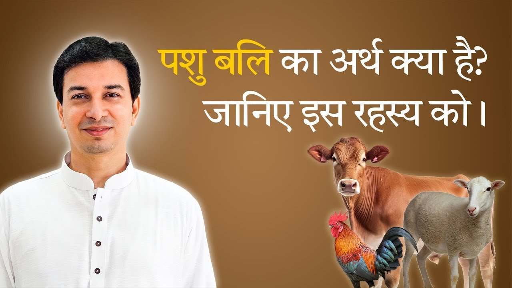
भीतर के पशु की आहुतिOffering the Animal Within
“ऑल द नेगेटिव क्वालिटीज़ मेक्स मी एन एनिमल... वह पशु मार देना है, उसकी बलि कर देनी है।”“All the negative qualities make me an animal... that animal must be killed, it must be sacrificed.”
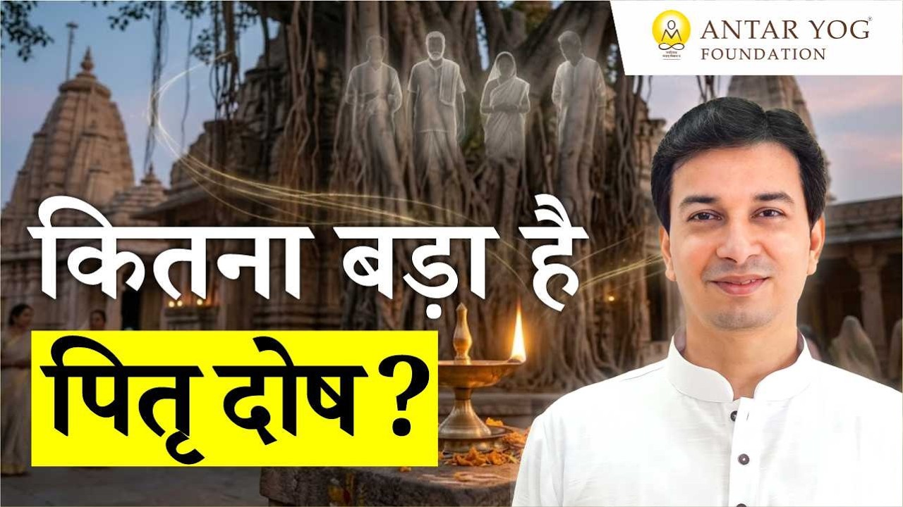
पितृ दोष कितना गहरा है जब पितर सात जन्मों में फैले होंHow Deep Pitru Dosh Runs When Your Ancestors Span Seven Births
“सात पीढ़ी पीछे तक उनका कुछ न कुछ कर्म आपके ऊपर आएगा।”“Some karma or other of the ancestors up to seven generations back will come upon you.”
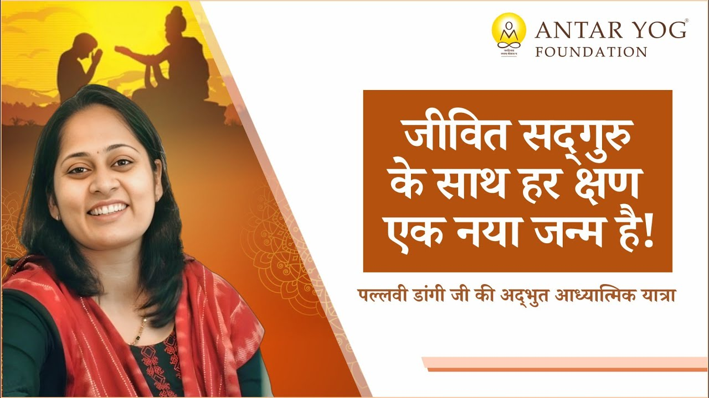
गुरु के सान्निध्य में हर क्षण नया जन्मA New Birth Every Moment in the Presence of the Guru
“इतने साल अपना-अपना, मैं-मेरा करने में बीत गए। क्या मिला उससे? कभी तो परिवार का आकार बढ़ाओ।”“So many years have gone by in 'my own, my own', in 'I and mine'. What did you get from it? Expand the size of your family for once.”
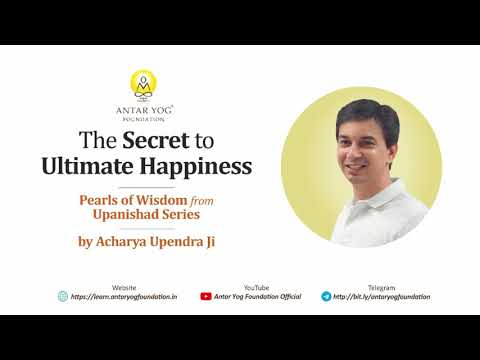
कौन सा ज्ञान मुक्त करता हैWhich Knowledge Liberates
“हर व्यक्ति यही बोलता है कि शुभ काम मैंने किया। अरे, फिर अशुभ काम कर कौन रहा है?”“All actions are performed by the qualities of nature; the one deluded by ego thinks, 'I am the doer.'”
वास्तु और आपके घर की ऊर्जाVastu and the Energy of Your Home
“हम दीवारें तोड़ने या दिशाएँ बदलने में विश्वास नहीं करते। हम पूरे स्थान के स्पंदन को ही ऊँचा कर देते हैं, और वही सब कुछ संतुलित कर देता है।”“We do not believe in breaking walls or changing directions. We raise the vibrations of the entire place itself, and that balances everything.”
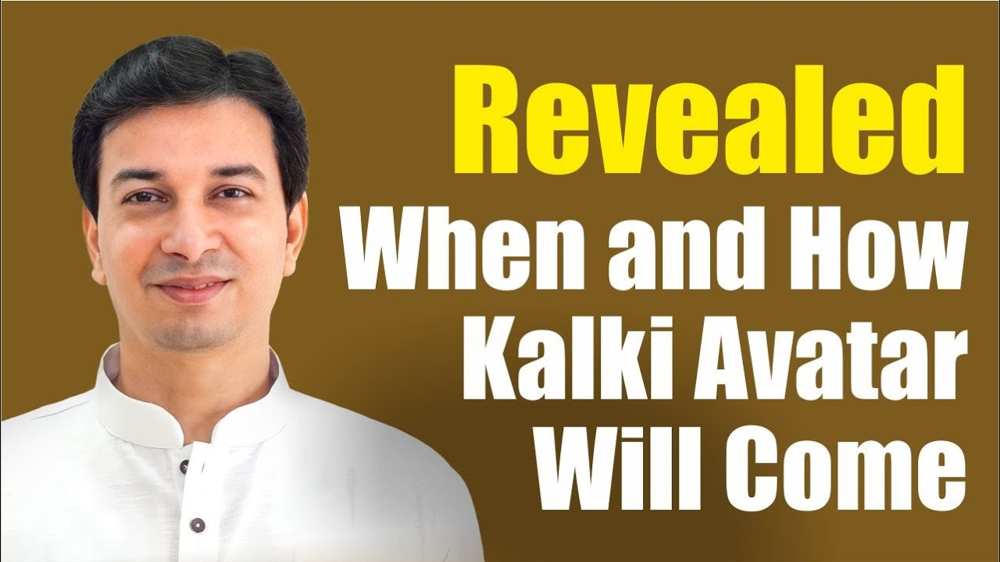
कल्कि अवतार कब आएगाWhen Will the Kalki Avatar Come
“उनका एक अंश भी आपके अंदर आया, तो उनके अस्तित्व का कुछ लाभ है।”“If even a part of them has come into you, then their existence is of some benefit.”
गुरु के बिना शास्त्र भटका सकते हैंWithout a Guru Scriptures Can Mislead
“तेरा प्रथम कर्तव्य है गुरु के पास जाकर शास्त्र समझना, और उसी से नियत कर्म करना।”“Regard your mother as God, regard your father as God, regard your teacher as God.”
हनुमान जी का एक उत्तर जो जातिवाद मिटा सकता हैOne Answer of Hanuman Ji That Can End Casteism
“जिस दिन यह समझ में आएगा, उस दिन यह जातिवाद खत्म होगा।”“The day this is understood, casteism will end.”
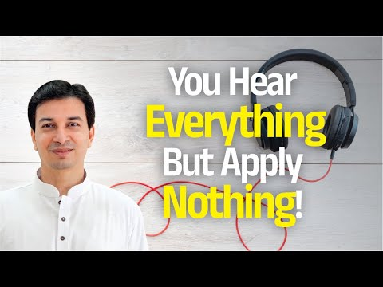
सत्संग आपका जीवन क्यों नहीं बदलताWhy Satsang Does Not Change Your Life
“अच्छा है, मेरे लिए कुछ बोला ही नहीं। जो था वो सब बाकी के लिए बोला।”“Good, nothing was said for me at all. Whatever there was, it was all said for everyone else.”
अंधा प्रेम क्यों खतरनाक हैWhy Blind Love Is Dangerous
“इसे कहते हैं मूर्खतापूर्ण करुणा।”“This is called idiotic compassion.”
जल आपकी पहली औषधि हैWater Is Your First Medicine
“थक कर आ गए, प्राण चला गया, तो प्राण के लिए लिक्विड लगता है।”“You arrived tired, the prana went, so for prana you need liquid.”
अध्यात्म के लिए साठ की प्रतीक्षा क्योंWhy Wait Until Sixty for Spirituality
“संन्यासी मत बनो, पर संन्यास वृत्ति से रहा जा सकता है।”“Do not become a sannyasi, but one can live with the spirit of renunciation.”
बीज मंत्र से छह घंटे की साधना दस मिनट मेंSix Hours of Sadhana in Ten Minutes with a Bija Mantra
“मन में जो नॉन स्टॉप मैंने धारण किया है, मैं गरीब हूं, दिस बिकम अ मंत्र।”“That which protects through contemplation is a mantra.”
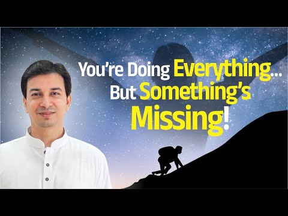
उपादान और निमित्त का रहस्यThe Secret of Upādāna and Nimitta
“ये दोनों कारण जब तक नहीं, तब तक कर्म कभी नहीं होगा।”“Until both these causes are there, the action will never happen.”
हर बार वही इंसान क्यों मिलता हैWhy Do You Keep Meeting the Same Person
“एक ही आत्मा, दो शरीरों में जन्मी है। वे दो अलग हैं ही नहीं।”“It is the same soul, born in two bodies. They are not two separate beings at all.”
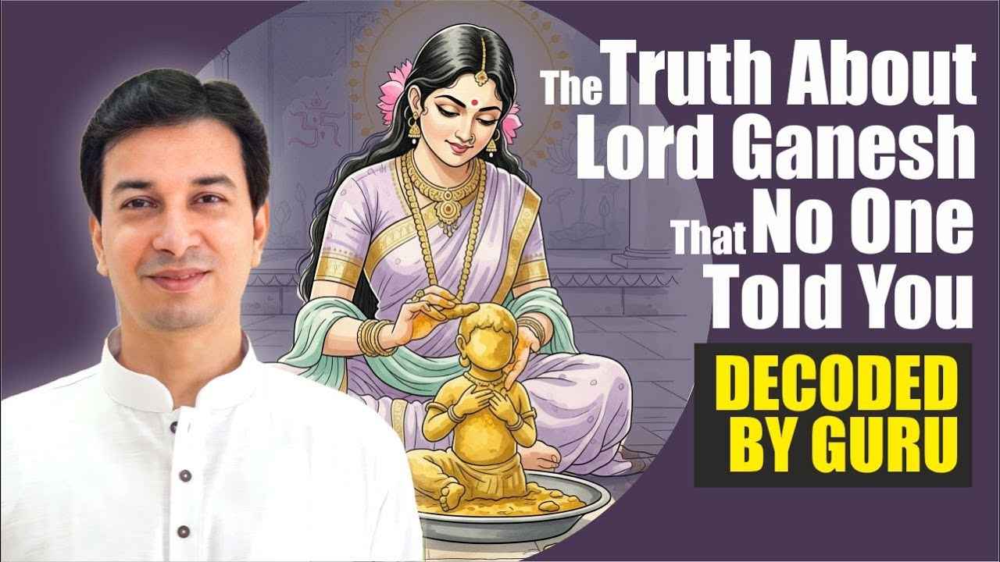
कौन है वास्तविक गणेशWho Is the Real Ganesha
“गणेश जो बोला है, वह मेरे अंदर की विवेक बुद्धि है, गणों का अधिपति बनने की बुद्धि।”“You eternally abide in the Muladhara chakra.”
सच्चा काम या केवल आकर्षणTrue Kama or Mere Infatuation
“प्रेम होगा तो स्पर्श होगा। प्रेम is not limited to विवाह।”“Where there is love, there will be touch. Love is not limited to marriage.”
नियमों की किताब या जीवन का नक्शाA Rulebook or a Map for Life
“लोगों में काम वृत्ति बढ़ाने के लिए नहीं, उसके द्वारा मोक्ष के लिए जाने के लिए।”“Charity given at the proper place and time and to a worthy recipient is held to be sattvic.”
प्रेम क्या है और क्या नहींWhat Love Is and What It Is Not
“बाकी सारे नाते जिसको आप प्रेम बोलते हो, वो प्रेम नहीं होता।”“At the end of many births, the wise one, knowing 'all is Vasudeva', surrenders to Me; such a great soul is very rare.”
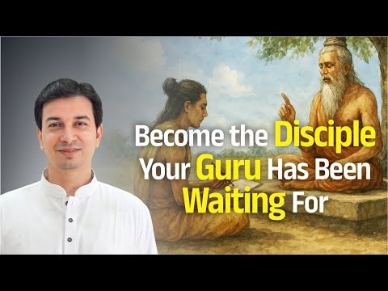
सच्चा शिष्य वही जिसका ज्ञान कर्म बन जाएA True Disciple Is One Whose Knowledge Becomes Action
“वक्ता ही सबसे अच्छा श्रोता होता है।”“The speaker is the best listener.”
क्षणिक सुख का जाल और शारीरिक आनंद की सच्चाईThe Trap of Fleeting Pleasure and the Truth of Physical Bliss
“देखना गलत नहीं है। किस चीज़ के लिए देखते हो, उसके ऊपर आपत्ति होती है।”“Seeing is not wrong. The objection is to what you are seeing it for.”
क्या ज़रूरत से ज़्यादा अच्छा होना भी गलत हैIs Being Too Good Also a Mistake
“रजोगुण का अंत दुख है।”“The end of rajoguna is sorrow.”
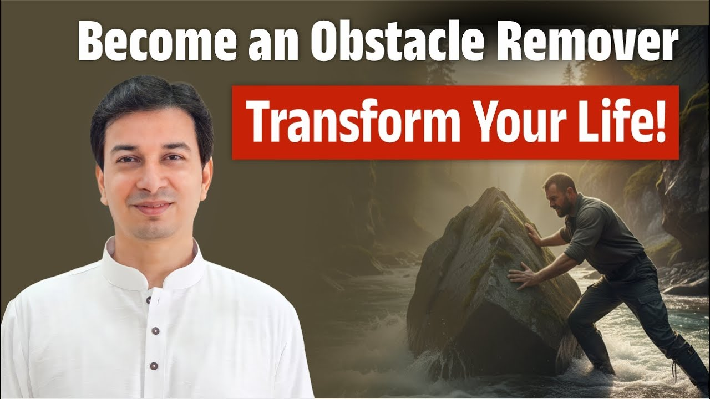
आप क्या हरण कर रहे हैं, और किसके लिए?What Are You Taking Away, and for Whom?
“अहिंसा को स्थापित करने के लिए की गई हिंसा, यह अहिंसा कहलाती है।”“You alone are the doer. You alone are the sustainer. You alone are the remover.”
आलस्य क्यों नहीं जाता और उससे बाहर कैसे निकलेंWhy Laziness Does Not Go Away and How to Get Out of It
“आत्म-बोध तो बहुत दूर की बात है। जब कर्तव्य का बोध हो जाता है, तो तमस चला जाता है और आप रजस में आ जाते हैं।”“Self-realisation is a far-off matter. When the sense of duty awakens, tamas leaves and you come into rajas.”
पूरी कोशिश के बाद भी संघर्ष क्यों? ज्ञानयुक्त कर्म का रहस्यWhy Do We Struggle Despite Trying Our Best? The Secret of Action Guided by Knowledge
“हर कर्म जो आप करते हैं, उसका परिणाम यह होना चाहिए कि आप उससे कुछ ज्ञान प्राप्त करें।”“Every action that you perform should result in you obtaining some knowledge from it.”
सहना गुण नहीं जब वह अत्याचार होEnduring Is No Virtue When It Is Abuse
“You can come out of it any time.”“You can come out of it any time.”
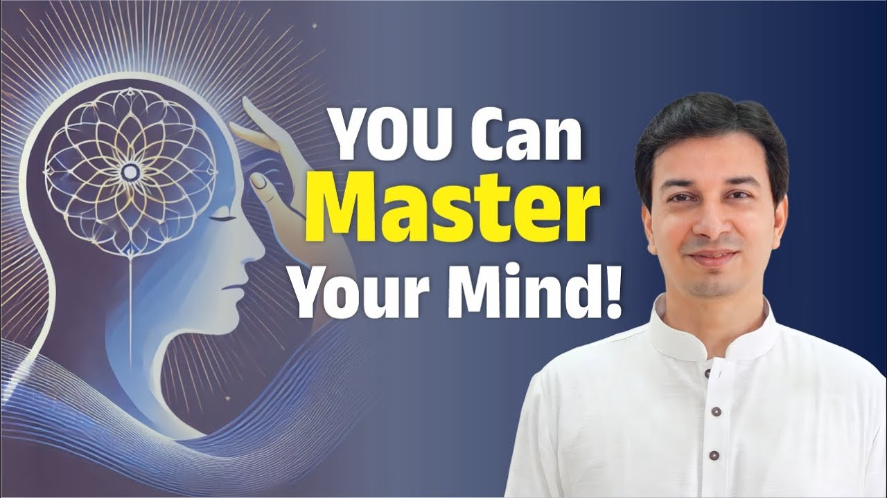
वृत्ति, प्रवृत्ति और स्थिरता का योगVṛtti, Pravṛtti and the Yoga of Steadiness
“पर्पज़ ही भूल गया... तो ये सब क्या है? मॉडिफिकेशंस ऑफ द माइंड है कि नहीं?”“Yoga is the stilling of the modifications of the mind.”
भगवान से समस्या मत हटवाओ, उसे हल करने की शक्ति माँगोDo Not Ask God to Remove the Problem, Ask for the Strength to Solve It
“हे भगवान, वो टैलेंट वो दे, मैं आगे का मैं खुद कर लूंगा।”“O Lord, give me that talent; the rest I will do myself.”
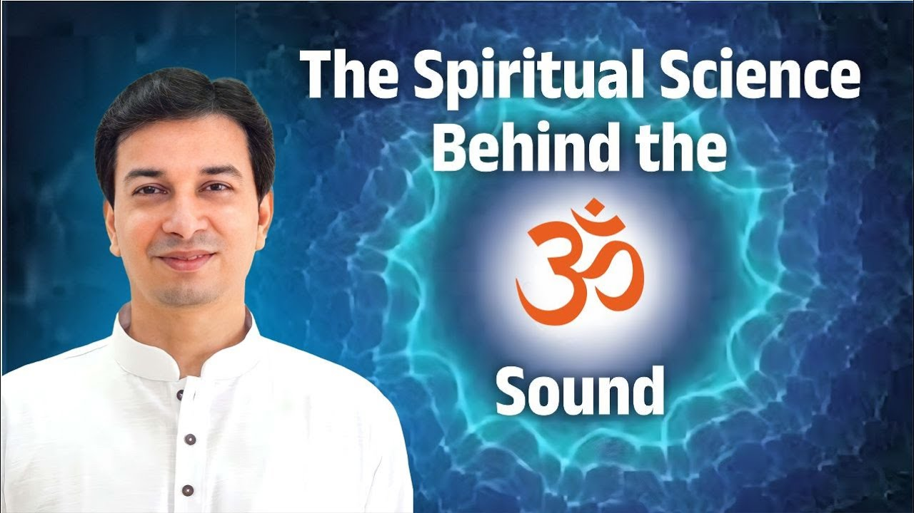
अ उ म में छिपा पूरा ब्रह्मांडThe Whole Universe Hidden in A U M
“It is symbolic. It is not about what you pronounce.”“It is symbolic. It is not about what you pronounce.”
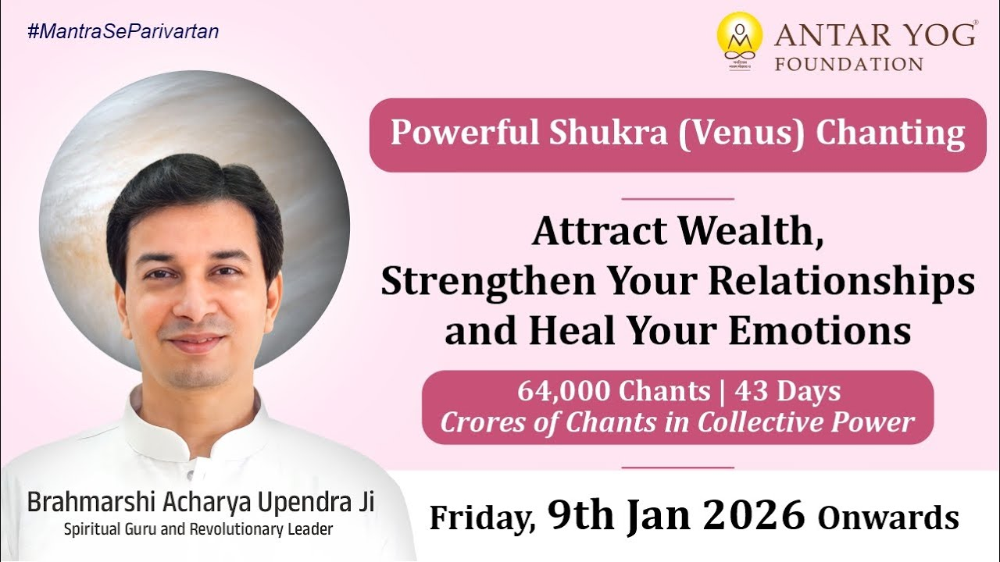
शुक्र जागे तो प्रेम, लक्ष्मी और आभा सहज आएWhen Shukra Awakens, Love, Lakshmi and Radiance Come Naturally
“तेरा लैपटॉप शुक्र था। वो दिखने में तुझे जड़ लग रहा था।”“Your laptop was Shukra. To you it looked lifeless.”
श्रेय या प्रेय, आपके कर्म किस दिशा में ले जा रहे हैंShreya or Preya, Where Are Your Actions Taking You
“It depends on what विचार I have. मेरा विचार क्या है? मुझे नर से नारायण जाना है।”“The fruit of good action is said to be sattvic and pure.”
अपने जीवन के गणाधिपति कैसे बनेंHow to Become the Ganadhipati of Your Own Life
“मुझे अपना जीवन अपनी इच्छा के अनुसार चलाने में सक्षम होना चाहिए। हजार लोगों का दास नहीं बनना चाहिए।”“I should be able to lead my own life the way I want. One should not be the slave of a thousand people.”
भैरव शक्ति और विश्वगुरु भारतBhairava Shakti and India as Vishwaguru
“भारतीयों को हर गुरु ने, अपने अवतार में या देवताओं के हाथ में, शस्त्र दिया था कि तू लड़। तो यहाँ सारे शरणागत होकर बैठ गए।”“In Krita the conduct taught in the shruti, in Treta the conduct born of the smriti, in Dwapara that taught in the Puranas, and in Kali that approved by the Agamas.”
शनि और मंगल से सीखें जीवन में सफलताLearning Success from Saturn and Mars
“ब्रेक का असली पर्पस होता है तुम अच्छी तरह से तेज गति से गाड़ी चला पाओ।”“The real purpose of brakes is that you can drive the vehicle well and at high speed.”
तीन डोरियाँ जो बाँधती भी हैं और चलाती भी हैंThree Cords That Both Bind and Drive Us
“गुण म्हणजे quality नाही; quality is a secondary point. मुख्यतः गुण म्हणजे दोरी।”“Guna does not mean quality; quality is a secondary point. Mainly, guna means a cord.”
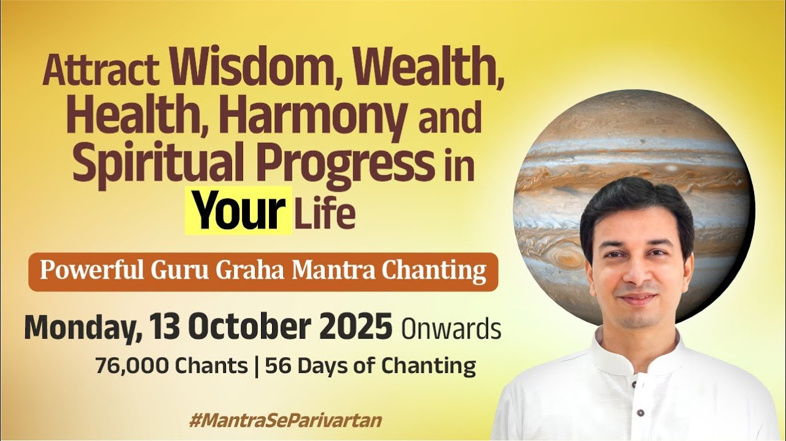
गुरु ही शिव हैं और देवगुरु बृहस्पति की कृपा का रहस्यThe Guru Is Shiva and the Secret of Devaguru Brihaspati's Grace
“परमात्मा ये सब रचना करता है, बाद में छुप जाता है, और हम लोग ढूँढ रहे हैं। तो गुरु भगवान को अच्छा लगता नहीं।”“Guru and Govinda both stand before me; whose feet shall I touch first? I bow to my Guru, who showed me Govinda.”
आपका भाग्य किसके हाथ में हैWho Holds Your Destiny
“एक लक्ष्य से चल सकता है, एक स्वभाव से नहीं चल सकेगा।”“You can run on one goal; you cannot run on one nature.”
जब राधा और कृष्ण ने अपनी भूमिकाएं बदलींWhen Radha and Krishna Exchanged Roles
“जीवन में कभी-कभी यह विपरीत भूमिका निभाना अनिवार्य है। तब जाकर प्रेम अपनी पूर्णता में व्यक्त होता है।”“At times in life, playing this opposite role is essential. Only then is love expressed in its fullness.”
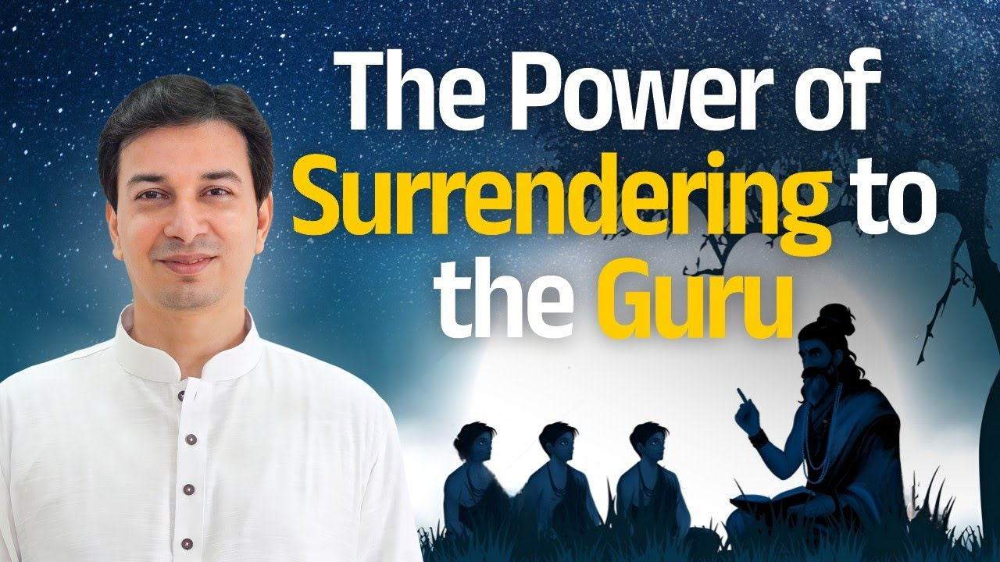
सब धर्म छोड़कर गुरु की शरण में क्यों जाएँWhy Give Up All Dharmas and Take Refuge in the Guru
“गाड़ी एक बार सही पकड़ ली, कर्म की दिशा सही पकड़ ली, तो गंतव्य स्थान अपने आप आएगा।”“Abandoning all dharmas, take refuge in Me alone. I shall free you from all sins; do not grieve.”
जब श्रद्धा ही उपचार बन जाएWhen Shraddha Itself Becomes the Cure
“पहला ही इतना अच्छा चुनो कि उसे पूरा समर्पण कर सको।”“Choose the first one so well that you can surrender to him completely.”
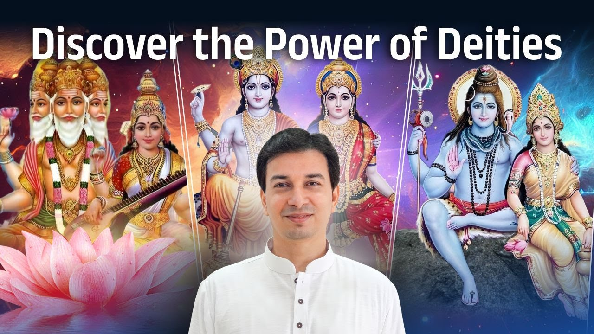
त्रिदेव और त्रिदेवियाँ आपके जीवन में कैसे काम करते हैंHow the Three Gods and Three Goddesses Work in Your Life
“Either you have to leave the world, or the world will leave you.”“Either you have to leave the world, or the world will leave you.”
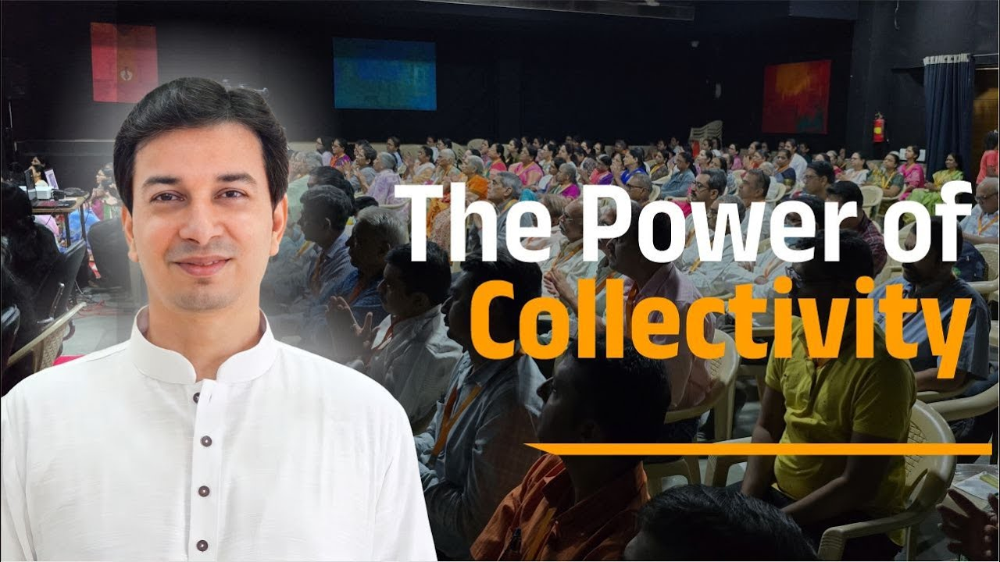
समाज की शक्ति और दैवी संपत्तिThe Power of Community and Divine Wealth
“धन बाद में अपने आप आता है।”“Wealth comes on its own afterwards.”
रोगी से मुक्ति तक, आध्यात्मिक यात्रा की चार सीढ़ियांFrom Illness to Liberation, the Four Steps of the Spiritual Journey
“रोगी से निरोगी, निरोगी से भोगी, भोगी से सिद्धि, सिद्धि से मुक्ति।”“From the sick to the healthy, from the healthy to the enjoyer, from the enjoyer to siddhi, from siddhi to liberation.”
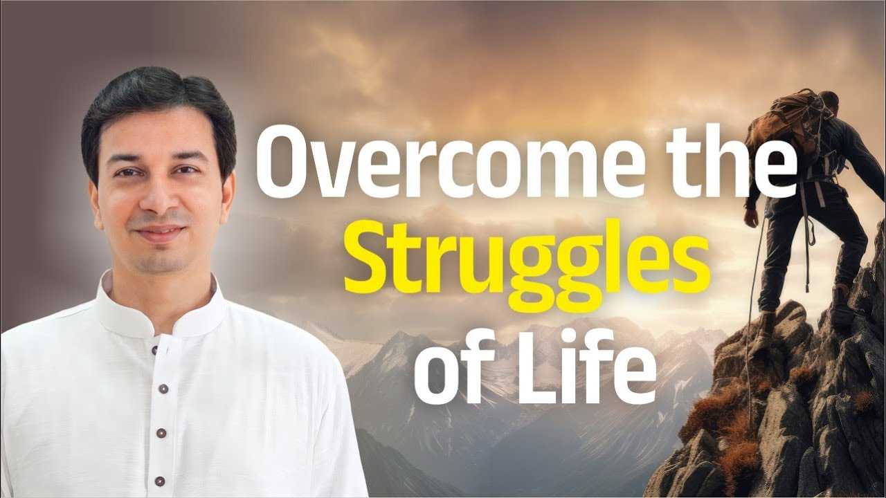
गीता से जीवन के संघर्षों को पार करनाOvercoming Life's Struggles Through the Gita
“Nothing is permanent; only thing that is constant is change.”“O son of Kunti, the contacts of the senses with their objects, which give cold and heat, pleasure and pain, come and go and are impermanent; endure them, O Bharata.”
आपका शरीर किस भोजन के लिए बना हैWhat Food Is Your Body Made For
“स्मूथ किसके लिए होगा? फटक से निकल जाना होगा तो स्मूथ होगा।”“Who would have a smooth one? The one whose food has to pass out at once will have a smooth one.”
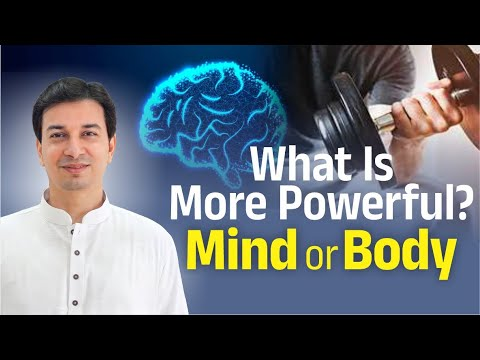
कलम या तलवार, पहले क्याPen or Sword, Which Comes First
“अहिंसा के कार्यों के लिए आपके आसपास शस्त्रधारी लोग चाहिए।”“Not the sword first, but legal protection.”
दबना नहीं, तेज से जीनाNot Suppression, but Living with Radiance
“अपना पैशन अगर पूर्ण नहीं किया तो भी पुनर्जन्म है, और कर्तव्य नहीं किया तो भी पुनर्जन्म है।”“If you do not fulfill your passion, there is rebirth for that too, and if you do not fulfill your duty, there is rebirth for that too.”
विवाह लेने का नहीं देने का संबंध हैMarriage Is a Relationship of Giving Not Taking
“इतना ज्ञान होना चाहिए कि उसको कैसा ट्रीट करना चाहिए, वो नाजुक है।”“One should have enough knowledge of how to treat her; she is delicate.”
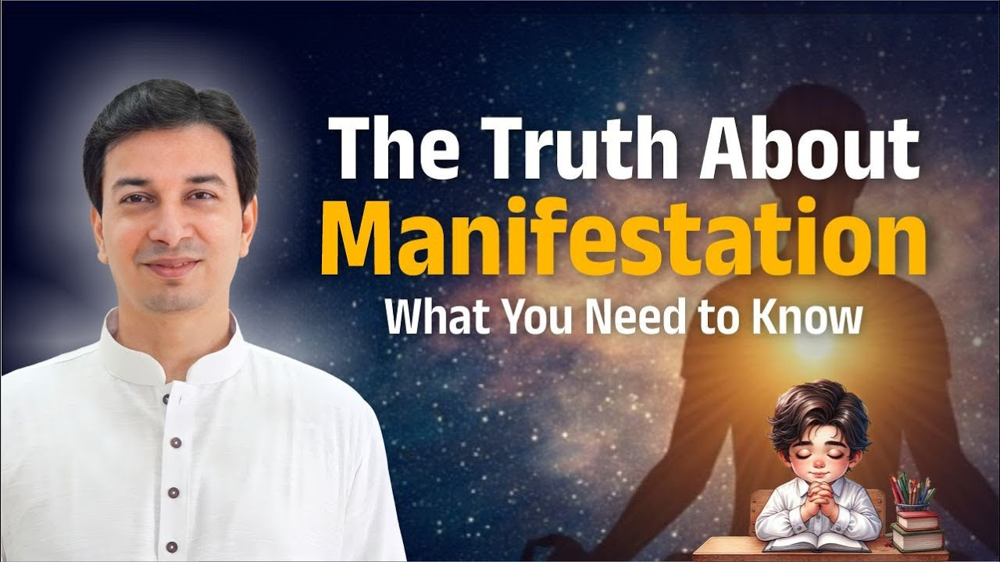
इच्छा से नहीं, प्रबल इच्छाशक्ति से बनता है जीवनLife Is Shaped Not by Wishes but by Intense Willpower
“Wish and it shall be given to the wisher नहीं है। Wishes से नहीं होगा।”“It is not 'wish and it shall be given to the wisher.' Wishes will not do it.”
प्रेम जो कृति में दिखेLove That Shows in Action
“प्रेम को प्रकट करना होता है, केवल हृदय में नहीं, केवल शब्दों में नहीं।”“Love has to be expressed, not only in the heart, not only in words.”
प्रेम के चार रूप और गुरु से सीखा गया अद्वैतThe Four Forms of Love and Advaita Learned from the Guru
“सबसे पहले गुरु के पास जाओ, क्योंकि वह खुद प्रैक्टिस करता होगा।”“First go to the Guru, because he himself must be practising it.”
सपनों का बोझ और राजसिक परवरिशThe Burden of Dreams and Rajasic Parenting
“मैं नहीं कर पाया, बेटा, तुझे करना होगा यह सपना पूर्ण।”“I could not do it, son; you must fulfil this dream.”
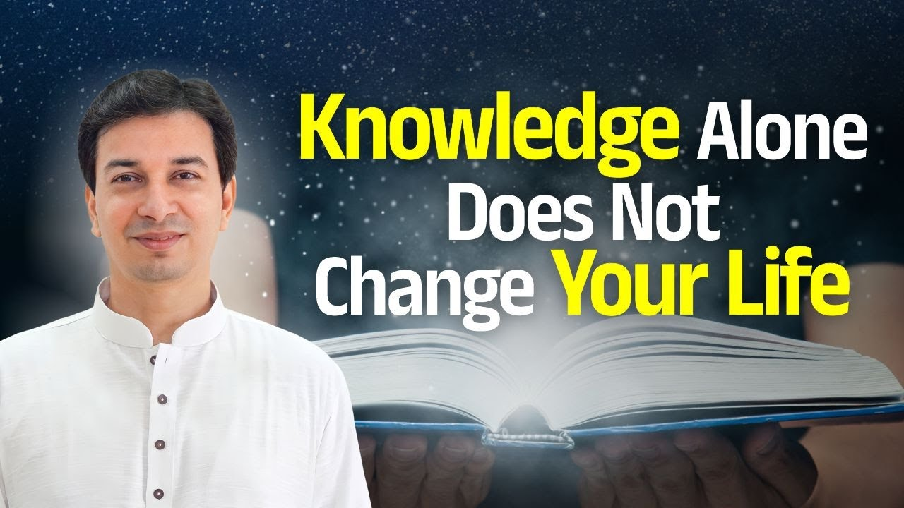
सब कुछ जानते हुए भी हम सही क्यों नहीं कर पातेWhy We Cannot Do What Is Right Even When We Know It
“धर्म तो मैं जानता हूँ, पर उसे करने की इच्छा नहीं होती; और अधर्म भी मैं जानता हूँ, पर उसे छोड़ नहीं सकता।”“Knowledge does not stop one from committing sin.”
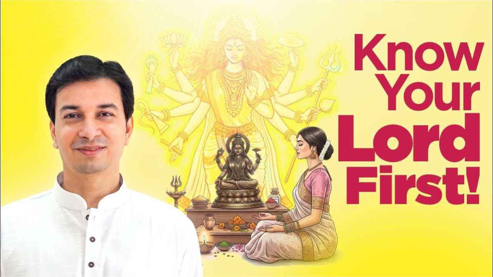
पूजा से पहले पहचान, क्या आप अपने भगवान को जानते हैंRecognition Before Worship, Do You Know Your God
“अगर तुम तुम्हारे भगवान को जानते ही नहीं, तो सिर्फ मानने से नहीं होता है।”“If you do not even know your God, mere believing does not work.”
भगवान को जानो, केवल मानो नहींKnow God, Do Not Merely Believe
“आप उसको जानते तक नहीं, पहचानते तक नहीं, और मैं उससे जुड़ गया, मुझे तुझसे प्रेम हो गया।”“For the benefit of seekers, a form of Brahman is conceived.”
क्या आपको अपना प्रथम कर्तव्य याद हैDo You Remember Your First Duty
“मेरे जीवन में मेरा गुरु हो, साक्षात्कार किया हुआ गुरु हो, जो मुझे नर से नारायण ले जाए।”“Let there be a Guru in my life, a realized Guru, who takes me from nara to Narayana.”
धारणा शक्ति का रहस्यThe Secret of Dharana Shakti
“दुःख का खेल अंदर से होता है। हर चीज़ में उसको दुःख ही दिखता है।”“The game of sorrow happens from within. In everything, he sees only sorrow.”
अच्छा राजा वही जो रोके भी और राह भी दिखाएA Good King Stops You and Also Shows the Way
“अच्छा राजा या अच्छा नेता वह होता है जो उसके बदले में कुछ तो अच्छा अल्टरनेटिव दे देता है।”“A good king or a good leader is one who gives at least some good alternative in return.”
गुरु के आँसूThe Guru's Tears
“गुरु ही शिव है, शिव ही गुरु है।”“The Guru is Shiva, Shiva is the Guru.”
सकारात्मकता की छिपी शक्तिThe Hidden Power of Positivity
“मेरे कान के लिए भद्र वह होता है जिसका परिणाम मेरे लिए अच्छा होता है।”“O gods, may we hear the auspicious with our ears; O worthy of worship, may we see the auspicious with our eyes.”
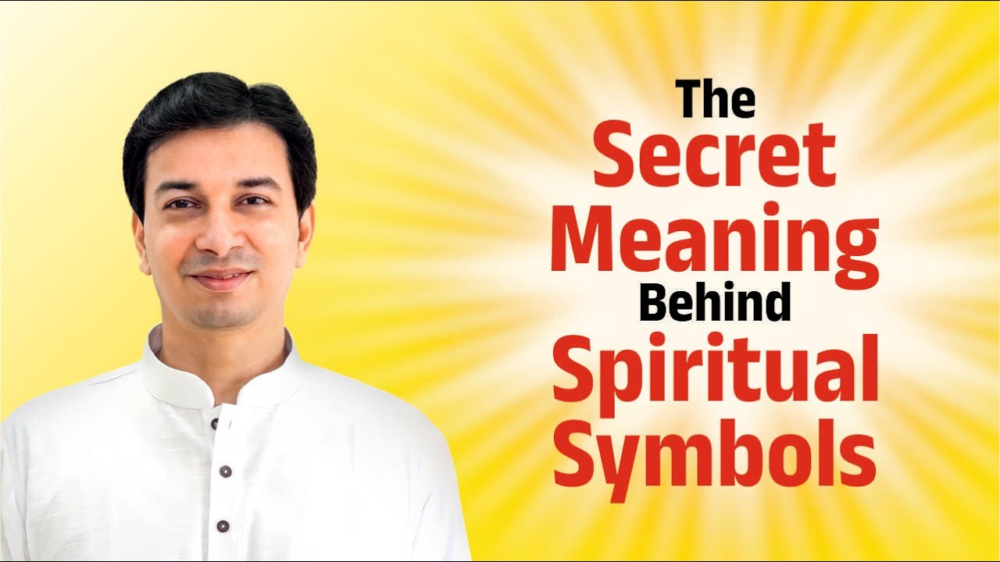
प्रतीकों के पीछे छिपा अर्थThe Meaning Hidden Behind Symbols
“अगर उस प्रतीक का दूसरा ही अर्थ निकाला और उसे पकड़कर रखा, तो अंधश्रद्धा चालू हो जाती है।”“If one draws some other meaning from that symbol and holds on to it, blind faith begins.”
खुद को खाकर दिखाओEat Yourself First
“बच्चों को तो दूर, खुद को खाकर दिखा!”“Leave the children aside, eat yourself and show me!”
नारी बराबर नहीं, हजार गुना शक्तिशाली हैWoman Is Not Equal, She Is a Thousand Times More Powerful
“स्त्री कभी भी पुरुष के बराबर नहीं। वह हजार गुना, कम से कम, शक्तिशाली है।”“No helplessness, no retreat.”
जब प्रश्न विज्ञान के हों तो उत्तर आत्मा से आएWhen the Questions Are Scientific, the Answer Must Come from the Soul
“बुद्धिवादी लोग गलत नहीं हैं। समस्या यह है कि हम उन्हें उत्तर नहीं दे पा रहे।”“The senses are higher than the body; higher than the senses is the mind; higher than the mind is the intellect; and beyond the intellect is the Self.”
गुरु और शिष्य, प्रेम का सर्वोच्च स्वरूपGuru and Disciple, the Highest Form of Love
“जैसा उन्होंने बोला है वैसा सुनने की आदत जिसको लग जाएगी, वही असली शिष्य कहलाता है।”“The one who develops the habit of listening exactly as they have spoken is called the true disciple.”
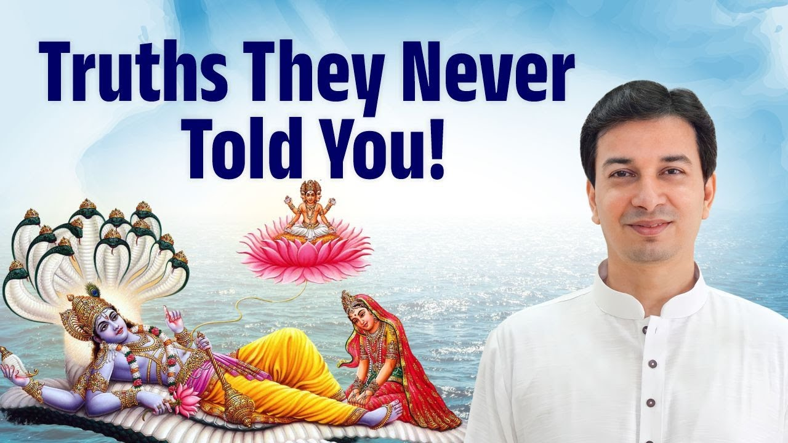
उत्पत्ति एक क्षण की, पालन पूरे जीवन काCreation Takes a Moment, Sustenance Takes a Lifetime
“बड़े स्टोरी में कुछ छोटा छोटा वापस उत्पन्न होता है, बंद होता है।”“Within the great story, small things arise again and come to an end.”
गौ सेवा जो कृतज्ञता को समृद्धि में बदल देGau Seva That Turns Gratitude into Prosperity
“हम कितनी भी सेवा करें, वह कम ही है। उनकी दवा करो, पानी दो, सब साफ करो; वह भी किया तो भी कम है।”“That alone is the Supreme Truth.”
भविष्य नारी के हाथों मेंThe Future Lies in the Hands of Women
“स्त्री कभी भी पुरुष के बराबर नहीं थी; वह कम से कम हजार गुना शक्तिशाली है।”“Woman was never equal to man; she is at least a thousand times more powerful.”
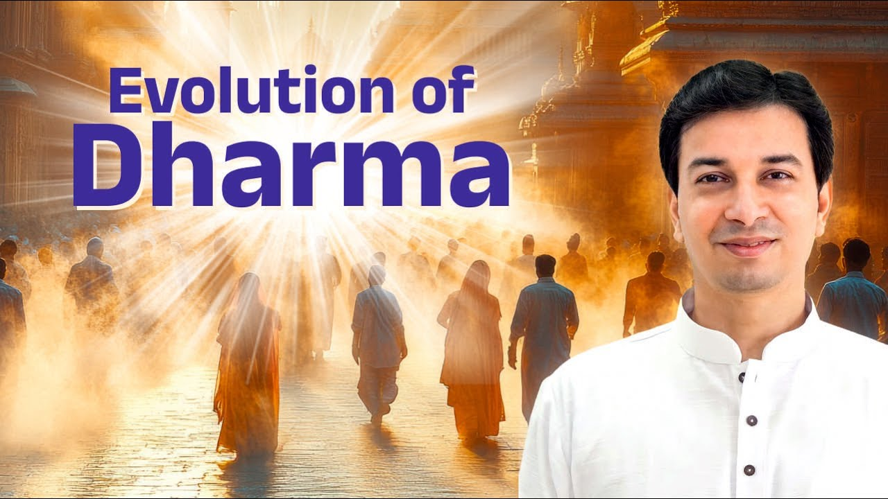
सनातन धर्म के विकास की कहानीThe Story of How Sanatan Dharma Evolved
“मुझे प्रकृति से जो मिला है, उसका मैं धन्यवाद कर रहा हूँ। तुझे तेरा धन्यवाद करना होगा।”“Whatever I have received from nature, I am giving thanks for it. You will have to give your own thanks.”
क्या आध्यात्मिक और सांसारिक जीवन सच में अलग हैंAre Spiritual and Worldly Life Really Separate
“दो संसार नहीं हैं, संसार केवल एक है, और वह आध्यात्मिक संसार है।”“There are no two worlds; there is only one world, and that is the spiritual world.”
उपचार के लिए खाएँ, हानि के लिए नहींEat to Heal, Not to Harm
“जब मुझे दिखता है कि सब ईश्वर है, ईश्वर ही मैं हूँ, तो मेरा ही अंग मैं खाना नहीं चाहूँगा, मारना नहीं चाहूँगा।”“When I see that all is God, God is me, I will not want to eat a part of my own self, nor want to kill it.”
जहाँ जन्म, वहीं का अन्नWhere You Are Born, There Is Your Food
“आप कुछ समय के लिए चीनी भोजन चख सकते हैं, पर वह आपकी जीवन-शैली नहीं बन सकता।”“You can taste Chinese food for a while, but it cannot become your way of life.”
गणपति को लाल फूल और दूर्वा ही क्यों प्रिय हैंWhy Ganapati Loves Red Flowers and Durva
“खून-पसीना एक करके काम करने के लिए मैं तैयार होना चाहिए, तभी तो विनायक बनोगे।”“I meditate on the red one, with a large belly and ears like winnowing fans, dressed in red, his limbs anointed with red sandal paste, well worshipped with red flowers.”
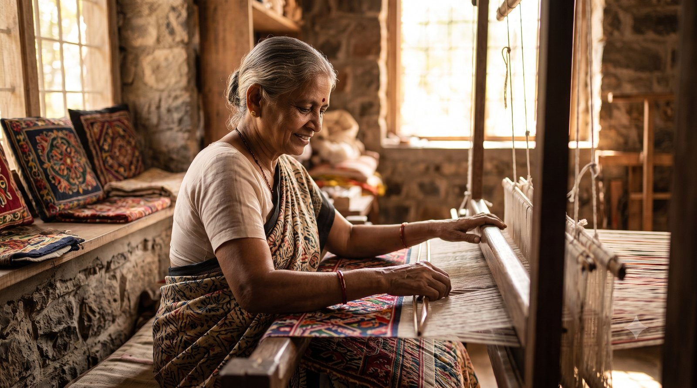
खुश होने के लिए नहीं, खुश होकर कर्म करेंDo Not Act to Become Happy, Act Happily
“खुश होकर करना है, खुश होने के लिए नहीं।”“Act happily, not in order to become happy.”
हर स्त्री के भीतर छिपी दिव्य शक्तिThe Divine Power Every Woman Holds
“स्त्रियाँ कभी भी पुरुष के बराबर नहीं थीं, किसी भी युग में। वे हमेशा उनसे कम से कम हज़ार गुना शक्तिशाली थीं।”“Women were never equal to men, in any age. They were always at least a thousand times more powerful than them.”
वेद पढ़ने की किताब नहीं, जानने की यात्रा हैThe Veda Is Not a Book to Read but a Journey of Knowing
“अहं वेद, मैंने जाना। जानने की प्रक्रिया को वेद कहते हैं।”“Aham veda, I have known. The process of knowing is called Veda.”
आपकी थाली में आपकी कमाई भी परोसी जाती हैYour Earnings Are Served on Your Plate Too
“आहार का आपके पैसा कमाने से भी संबंध था।”“Food was also connected with how you earn your money.”
भाग्य पहले से बह रहा है, बस रोड़ा हटाइएDestiny Is Already Flowing, Just Remove the Stone
“पानी तो पहले से ही विद्यमान था। रास्ता विद्यमान था। वो कचरा problem था।”“The instrumental cause does not set nature in motion; it only removes the obstruction, like a farmer.”
मन को वश में करो, इससे पहले कि मन तुम्हें वश में कर लेControl Your Mind Before It Controls You
“जितना मन लगाने में इजी था, उतना ही हटाना आना चाहिए।”“O Partha, the unwavering steadiness by which, through yoga, one holds the activities of the mind, the life breath and the senses, that steadiness is sattvic.”
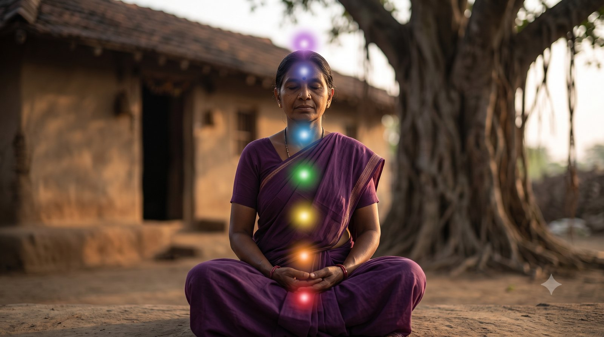
जन्मों की यात्रा एक साधना मेंLifetimes of Journey in One Sadhana
“एक-एक चक्र ऊपर उठने के लिए कई जन्म लगते हैं।”“Rising by even one chakra takes many lifetimes.”
आपकी संगति ही आपका भविष्य गढ़ती हैThe Company You Keep Shapes Your Destiny
“That is how you can maintain सत्त्वगुण. Otherwise you cannot.”“That is how you can maintain sattva guna. Otherwise you cannot.”
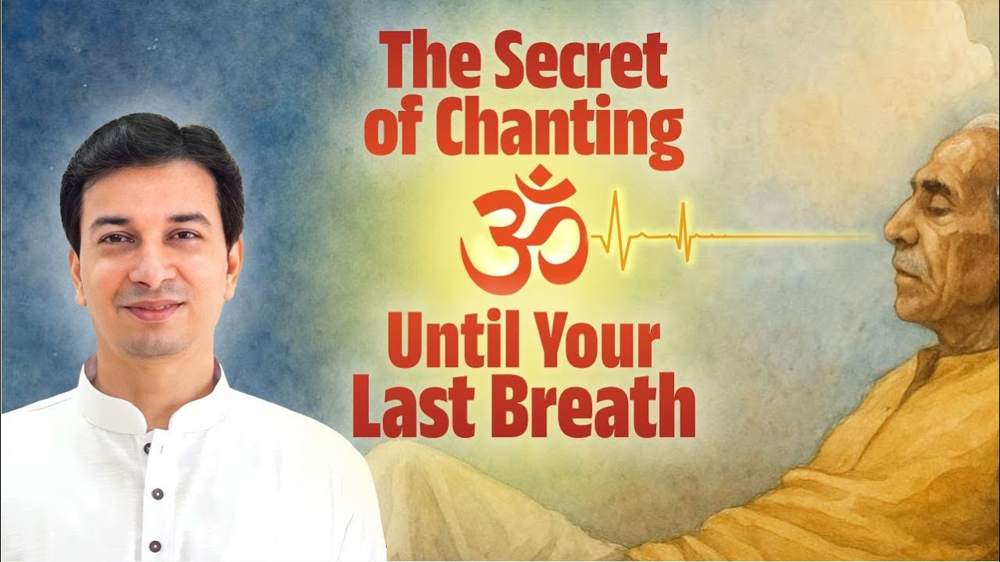
क्या मृत्यु के क्षण में मुक्ति संभव है?Is Liberation Possible at the Moment of Death?
“पर मैं निर्गुण को जानता ही नहीं हूं, समझता ही नहीं, तो मेरा ये अक्षर का ओम बोल के फायदा नहीं।”“That which the knowers of the Vedas call imperishable, which ascetics free from attachment enter, and desiring which they practise celibacy, that supreme state I shall declare to you in brief.”
कर्म आपको जलाए उससे पहले आप कर्म को जला दोBurn Your Karma Before It Burns You
“अगर गुस्सा कर ही रहे हो, तो एक्टिंग वाला गुस्सा करो, जिससे बीपी नहीं बढ़ता।”“If you are going to be angry anyway, be angry as an act, so that your BP does not rise.”
धन, धर्म और मुक्ति का प्राचीन रहस्यThe Ancient Secret of Wealth, Dharma and Liberation
“हमें जो सोच दी गई है कि पैसा खराब, अमीर खराब, अमीरी खराब, इससे दिमाग खराब होता है, ऐसा कुछ नहीं होता है।”“The root of happiness is dharma, the root of dharma is wealth (artha), and the root of wealth is the state.”
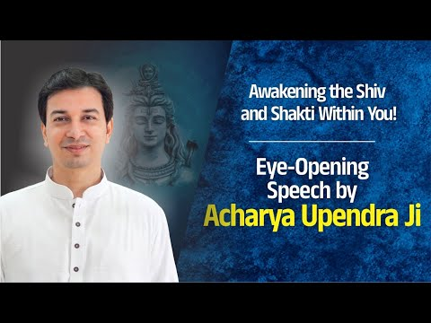
महाशिवरात्रि पर जानिए शिवलिंग का असली रहस्यThe Real Secret of the Shivalinga This Maha Shivratri
“जो दिख रहा था वह साकार था, और हमारे भीतर जो निराकार भाग है, उसका जो प्रतीक है, उसे शिवलिंग कहते हैं।”“What was visible was the form; and the formless part within us, its symbol is what we call the Shivalinga.”
भीतर की तीन शक्तियों को जगाइएAwaken the Three Powers Within
“कुछ तो पाठ ज़रूर है। जिस दिन यह बात समझ में आने लगती है, तब 'वासुदेव सर्वम् इति' समझ में आने लगता है।”“The forms of Brahman are conceived for the benefit of the seekers.”
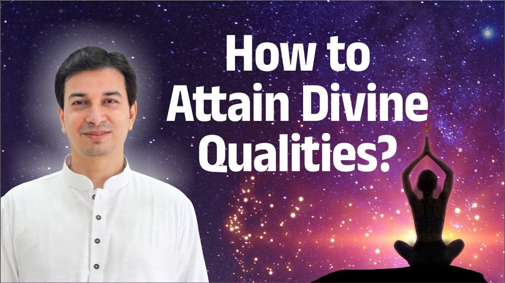
दैवी संपत्ति को जगाने की कलाThe Art of Awakening Divine Wealth
“उल्टा दोष लगेगा। कर्म का महत्व दिखाओ, करके दिखाओ, वह चलेगा।”“Non-violence, truthfulness, freedom from anger, renunciation, peace, absence of slander, compassion for all beings, freedom from craving, gentleness, modesty and steadiness.”
इस खोज से कोई अध्याय नहीं मिला।No chapters match this search.